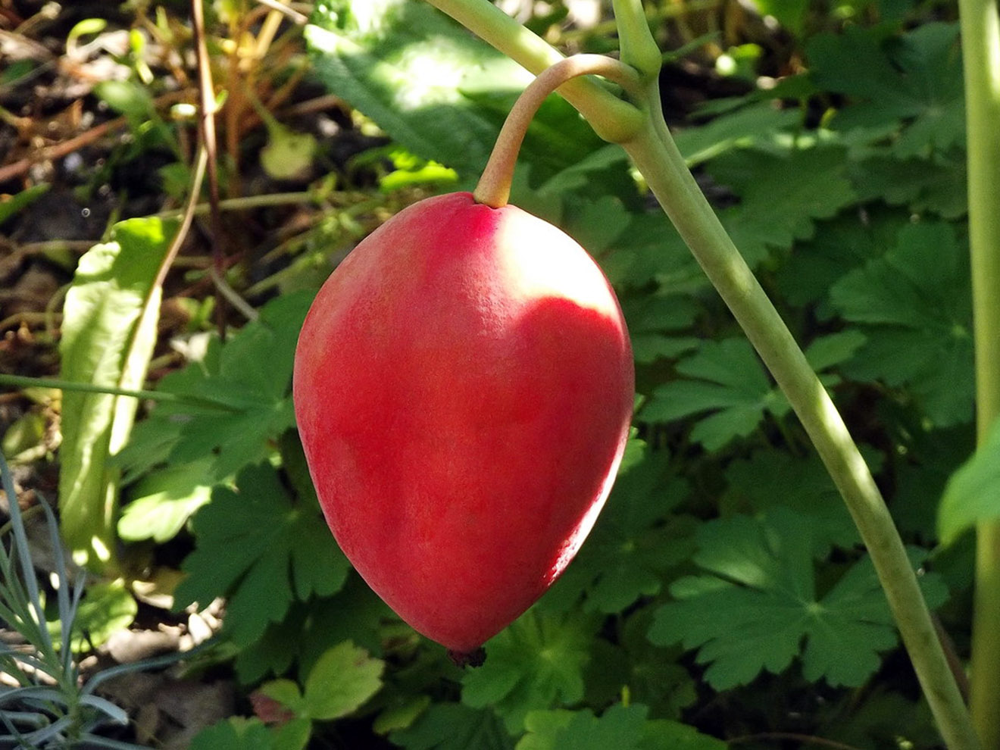
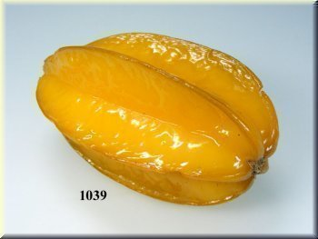
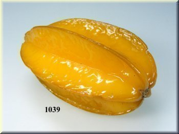

Durianas – Tailando vaisių karalius, smirdantis vaisius | THAI.LT
2020.10.29 08:40

Tailandas Kelionės planavimas Tajų kalba Apsipirkimas Tailando valiuta Tailando Festivaliai Tailando Viza Bevizis režimas Vienkartinė viza Daugkartinė viza Tailando konsulatas Bankokas Čiangmajus Čiangrajus Ajutaja Kančanaburis Puketas Ko Samujis Krabis Pataja Hua Hinas Orai Tailande Orai Tailando regionuose Orai kiekvieną mėnesį Kada geriausia vykti Lietaus sezonas Transportas Skrydžiai į Tailandą Atvykimas sausuma Kelionės po Tailandą Vietinis transportas Sukotajus Lopburis Nakhon Patomas Ko Sametas Tailando regionai Ko Phi Phi salos Ko Čangas Ko Panganas Ko Lanta Kurortai ir salos Pietryčių Azija Vietnamas Malaizija Singapūras Mianmaras Filipinai Indonezija Laosas Kambodža Maldyvai Tailando Virtuvė Patiekalų TOP 10 Tailando vaisiai Receptai Restoranai Virtuvės Blogas Blogas Užsakymai Viešbučiai Transporto bilietai Pramogos ir ekskursijos
Durianas – Tailando vaisių karalius, smirdantis vaisius
Durianas – Tailando vaisius , tajų kalba vadinamas Tu-Rian. Tai didžiulis vaisius, pasižymintis specifiniu kvapu, todėl tikrai pastebėsite ir užuosite durianus pardavinėjamus ne tik Bankoko gatvėse ar turguose, bet ir praktiškai visur Tailande.
Duriano skonis
Vakariečiams dėl savo skonio ir savotiško kvapo durianas ne visada yra priimtinas vaisius, todėl ir lietuviškam skoniui dažnai jo skonis gali būti pernelyg specifinis. Tačiau tajams durianas - tai visų vaisių karalius. Duriano skonis daugeliui Tailando gyventojų tikrai patinka, kaip ir tai, jog suvalgius šio vaisiaus užplūsta vidinė šiluma, lyg po gero raudono vyno taurės. Beje, duriano vartoti kartu su alkoholiu nerekomenduojama.
Išbandykite patys, kad sužinotumėte, koks durianas yra iš tikrųjų. Ką gali žinoti, galbūt šį vaisių tiesiog įsimylėsite. Jei nepatiks pernelyg stiprus jo skonis, galite išbandyti įvairius duriano pyragėlius, frapė, saldainius ar netgi ledus su durianu.
Kaip valgyti durianą
Valgomas yra tik duriano minkštimas. Paprastai Tailande durianą pardavėjai išpjausto jau parduodami, tad dėl to sukti galvos nereikia.
Duriano kaina
Paprastai duriano kaina yra nustatoma pagal jo svorį, kuri neturėtų siekti daugiau nei 100 THB už kilogramą. Tačiau dažniausiai parduodami jau išpjaustytas duriano minkštimas, kuris paprastai išpjaustomas tiesiog pardavimo vietoje. Pakuotė duriano minkštimo, priklausomai nuo jos dydžio, paprastai kainuoja nuo 100 iki 200 THB vietiniuose turguose ir apytiksliai du kartus brangiau labiau turistinėse vietose.
Vaisių karalius juk negali būti pigus!
Ribojimai
Durianas yra tikrai stipriai smirdantis vaisius, todėl jų negalima įsinešti į lėktuvą, metro ar kitas uždaras viešąsias erdves. Nenustebkite prie įėjimo į pastatą pamatę lipduką, draudžiantį čia įsinešti durianą. Durianas – pakankamai pavojingas ginklas!
KSXN Atnaujinta: 2020 gegužės 03
Tailando virtuvės ir kelionių gidas - Thai.lt
Booking.com
Terms & Conditions
Privacy Policy THAIest
Trip Plan X
Tolyn.lt
Bankokas.lt
Thai on Tours
In order to provide you with the best online experience this website uses cookies. Delete cookies
In order to provide you with the best online experience this website uses cookies.
By using our website, you agree to our use of cookies. Learn more
I agree ×Privacy Policy
Last updated: 8 January 2019
MB Proesna (“us”, “we” or a similar construction) operates the THAI.LT website (the “Website”). This page informs you of our policies regarding the collection, use, and disclosure of personal data when you use the Website and the choices you have associated with that data. We use your data to provide and improve the Website.
By using the Website, you agree to the collection and use of information in accordance with this policy .
Unless otherwise defined in this Privacy Policy, terms used in this Privacy Policy have the same meanings as in our Terms and Conditions .
Information Collection and Use
We collect several different types of information for various purposes to provide and improve the Website.
Usage Data
We may collect information how the Website is accessed and used (“Usage Data”). This Usage Data may include information such as your computer's IP address, browser type, browser version, the pages of the Website that you visit, the time and date of your visit, the time spent on those pages, unique device identifiers and other diagnostic data.
Tracking Cookies Data
THAI.LT (“the Website”) uses cookies - small files that are downloaded to your computer, to improve your browsing experience. This page describes what information they gather, how we use it and why we sometimes need to store these cookies. We will also share how you can prevent these cookies from being stored. However, blocking cookies may downgrade or 'break' certain elements of the Website’s functionality.
You can prevent the setting of cookies by adjusting the settings on your browser (see your browser Help for how to do this). Be aware that disabling cookies will affect the functionality of this and many other websites that you visit. Disabling cookies will usually result in also disabling certain functionality and features of this site. Therefore it is recommended that you do not disable cookies.
For more general information on cookies see http://www.aboutcookies.org .
The Cookies We Set
In order to provide you with a great experience on the Website we provide the functionality to set your preferences for how the Website runs when you use it. In order to remember your preferences we need to set cookies so that this information can be called whenever you interact with a page is affected by your preferences.
Third Party Cookies
In some special cases we also use cookies provided by trusted third parties. The following section details which third party cookies you might encounter through this site.
This site uses Google Analytics which is one of the most widespread and trusted analytics solutions on the web for helping us to understand how you use the site and ways that we can improve your experience. These cookies may track things such as how long you spend on the site and the pages that you visit so we can continue to produce engaging content.
For more information on Google Analytics cookies, see the Google Analytics: Safeguarding Your Data .
We also use third party advertisements on the Website to cover the expenses of running the service. Some of these advertisers may use technology such as cookies and web beacons when they advertise on the Website, which will also send these advertisers (such as Google through the Google AdSense service) information including your IP address, your ISP and the browser you used to visit the Website. This is generally used for geotargeting purposes or showing certain ads based on specific sites visited. The Google AdSense service we use to serve advertising uses a DoubleClick cookie to serve more relevant ads across the web and limit the number of times that a given ad is shown to you.
For more information on Google AdSense see the official Google AdSense privacy FAQ .
We also use social media buttons and plugins on the Website that allow you to connect with your social networks in various ways. If you share any content on the Website through social networks (for example by clicking a Facebook “like” button or a “Tweet” button) you may be sent cookies from these websites. We do not control the setting of these cookies so please check the websites of these third-parties for more information about their cookies and how to manage them:
Google Privacy Policy Facebook Privacy Policy Twitter Privacy PolicyComment feature on the Website is presented via third-party software “Disqus” that uses cookies to allow users to comment on the Website. Please check the website of “Disqus” for more information about their cookies and how to manage them here: Disqus Privacy Policy
Links to Other Websites
The Website may contain links to other websites that are operated by third parties. We don’t control these third party websites (including whether or not they store cookies) and this Privacy Policy does not apply to them. Please consult the terms and conditions and Privacy Policy of the relevant third party website to find out how that site collects and uses your information and to establish whether and for what purpose they use cookies.
Changes to This Privacy Policy
We may update our Privacy Policy from time to time. We will notify you of any changes by posting the new Privacy Policy on this page.
You are advised to review this Privacy Policy periodically for any changes. Changes to this Privacy Policy are effective when they are posted on this page.
More Information
Hopefully that has clarified things for you and as was previously mentioned if there is something that you aren't sure whether you need or not it's usually safer to leave cookies enabled in case it does interact with one of the features you use on our site. However, if you are still looking for more information, then you can contact us through our Contact Form .
Uždaryti © 2020 THAI.LT prekės ženklas priklauso Proesna . Visos teisės saugomos. Pradžia Tailandas - ką žinoti? Kelionė savarankiškai Vizos Tajų kalba Pirkiniai Valiuta Festivaliai Orai Transportas Tailandas - kur keliauti? Bankokas Čiangmajus Puketas Ko Samujis Krabi Pataja Kiti kurortai ir salos Kitos vietovės Tailando virtuvė Populiariausi patiekalai Tailando vaisiai Receptai Restoranai Virtuvės blog'as Kitos Azijos šalys Vietnamas Malaizija Singapūras Mianmaras Filipinai Indonezija Laosas Kambodža Maldyvai BLOG'as Užsakymai Viešbučiai Transporto bilietai Pramogos ir ekskursijos Susisiekti- SEGEBUTĖS UŽRAŠAI: Pitaja arba "Drakono vaisius"
- Sodo gėrybės - Sujunk 3 vaisius
- vaisius - Vikižodynas - Wiktionary
- Daržovės ir vaisiai - BARBORA
- Džiovinti vaisiai | Džiovintos uogos | Riešutai Jums
- Drakono vaisius arba Kertuotis – Tailando vaisius ...
- Egzotiniai vaisiai ir daržovės | MAXIMA | MAXIMA
- Durianas – Tailando vaisių karalius, smirdantis vaisius ...
- VAISIAUS ŽŪTIS
- vaisiai - išsamiai DELFI.lt
- SEGEBUTĖS UŽRAŠAI: Pitaja arba "Drakono vaisius"
„Misija – švari vasara“ skaičiuoja darbo vaisius . www.alkas.lt 2020 09 24 11:04 „Misija – švari vasara“ skaičiuoja rezultatus | lrv.lt nuotr. Vasaros pradžioje Valstybinė saugomų teritorijų tarnyba prisijungė prie pakuočių tvarkymo sumanymo „Misija – švari vasara“. Kadangi buvo pastebėta, jog paskelbus karantiną ...
- Sodo gėrybės - Sujunk 3 vaisius
Paspaudus vaisius turi būti labai minkštas, o žievė itin lengvai luptis. Jei sukate galvą, ką pagaminti iš avokado. Štai jums kelios idėjos. Vištienos salotos su mangais ir avokadais. Itin ...
- vaisius - Vikižodynas - Wiktionary
Geriausia apsaugoti džiovintus vaisius nuo tiesioginių saulės spindulių ir laikyti juos tamsioje vietoje. Jei šaldytuve nėra pakankamai vietos džiovintiems vaisiams laikyti, galite juos įdėti į viršutinę virtuvės stalčių lentyną, kur dažnai nežiūrite. Atkreipkite dėmesį, kad kambaryje neturėtų būti didelė drėgmė.
- Daržovės ir vaisiai - BARBORA
Durianas – Tailando vaisius, tajų kalba vadinamas Tu-Rian.Tai didžiulis vaisius, pasižymintis specifiniu kvapu, todėl tikrai pastebėsite ir užuosite durianus pardavinėjamus ne tik Bankoko gatvėse ar turguose, bet ir praktiškai visur Tailande.
- Džiovinti vaisiai | Džiovintos uogos | Riešutai Jums
Saldžiarūgščius vaisius saugojo piktos ir nuodingos širšės. Žiemos pradžia Lapkritis - rugsėjo anūkas, o spalio - sūnus. Jis dar ne žiema. Tai paskutinis rudens mėnuo. Piktų šalnų ir žvarbumo pradžia. Nematoma šalčio giltinė nuvirina pievas, laukus, paežeres. Nupurto spalio auksą beržynuose, užgesina raudonų klevų ...
- Drakono vaisius arba Kertuotis – Tailando vaisius ...
Deja, visas bergamotės gėris yra odelėje, pats vaisius yra rūgštus ir maistui nenaudojamas. Nedideli bergamočių medeliai dyglių auga Italijoje, Bergamo regione, žydi balandį smulkiais baltais ir salsvai kvepiančiais žiedais. Vaisiai panašūs į citrinas ir sveria apie 200 g. Jos prinoksta ir skinamos žiemą bei ankstyvą pavasarį ...
- Egzotiniai vaisiai ir daržovės | MAXIMA | MAXIMA
Kertuotis, geriau žinomas kaip drakono vaisius, tajų kalba vadinamas Gao Mung Gorn, yra vienas iš Tailando vaisių, kurių tiesiog būtina paragauti keliaujant į Tailandą. Drakono vaisius yra iš tikrųjų išskirtinai atrodantis vaisius ir savo pavadinimą yra gavęs būtent dėl išskirtinės išvaizdos.
- Durianas – Tailando vaisių karalius, smirdantis vaisius ...
Blenderyje sumaltas drakono vaisius tapo gličia tyre, kuri nepasižymėjo skoniu, bet suputojo ir priminė šampūną su juodais krisleliais. Teko tą tyrę stipriai skiesti ananasų ir apelsinų sultimis, kol skonis tapo patrauklus ir nesijautė glitumo, tačiau ir pitajos skonio visai nesijautė. Nepatariu pitajos naudoti gėrimams.
- VAISIAUS ŽŪTIS
Maisto ir kitų kasdienių prekių parduotuvė internete. Informuojame, kad šioje svetainėje yra naudojami slapukai (angl. cookies).
- vaisiai - išsamiai DELFI.lt
Džiovinti vaisiai ir uogos ne tik sveikas ir maistingas užkandis praalkus, bet ir puikus įvairių maisto patiekalų pagardas, kurį įsigysite už puikią kainą! Įsigykite jau pamėgtų džiovintų vaisių ir uogų bei atraskite naujus skonius.
„Misija – švari vasara“ skaičiuoja darbo vaisius . www.alkas.lt 2020 09 24 11:04 „Misija – švari vasara“ skaičiuoja rezultatus | lrv.lt nuotr. Vasaros pradžioje Valstybinė saugomų teritorijų tarnyba prisijungė prie pakuočių tvarkymo sumanymo „Misija – švari vasara“. Kadangi buvo pastebėta, jog paskelbus karantiną ...
Paspaudus vaisius turi būti labai minkštas, o žievė itin lengvai luptis. Jei sukate galvą, ką pagaminti iš avokado. Štai jums kelios idėjos. Vištienos salotos su mangais ir avokadais. Itin ...
Geriausia apsaugoti džiovintus vaisius nuo tiesioginių saulės spindulių ir laikyti juos tamsioje vietoje. Jei šaldytuve nėra pakankamai vietos džiovintiems vaisiams laikyti, galite juos įdėti į viršutinę virtuvės stalčių lentyną, kur dažnai nežiūrite. Atkreipkite dėmesį, kad kambaryje neturėtų būti didelė drėgmė.
Durianas – Tailando vaisius, tajų kalba vadinamas Tu-Rian.Tai didžiulis vaisius, pasižymintis specifiniu kvapu, todėl tikrai pastebėsite ir užuosite durianus pardavinėjamus ne tik Bankoko gatvėse ar turguose, bet ir praktiškai visur Tailande.
Saldžiarūgščius vaisius saugojo piktos ir nuodingos širšės. Žiemos pradžia Lapkritis - rugsėjo anūkas, o spalio - sūnus. Jis dar ne žiema. Tai paskutinis rudens mėnuo. Piktų šalnų ir žvarbumo pradžia. Nematoma šalčio giltinė nuvirina pievas, laukus, paežeres. Nupurto spalio auksą beržynuose, užgesina raudonų klevų ...
Deja, visas bergamotės gėris yra odelėje, pats vaisius yra rūgštus ir maistui nenaudojamas. Nedideli bergamočių medeliai dyglių auga Italijoje, Bergamo regione, žydi balandį smulkiais baltais ir salsvai kvepiančiais žiedais. Vaisiai panašūs į citrinas ir sveria apie 200 g. Jos prinoksta ir skinamos žiemą bei ankstyvą pavasarį ...
Kertuotis, geriau žinomas kaip drakono vaisius, tajų kalba vadinamas Gao Mung Gorn, yra vienas iš Tailando vaisių, kurių tiesiog būtina paragauti keliaujant į Tailandą. Drakono vaisius yra iš tikrųjų išskirtinai atrodantis vaisius ir savo pavadinimą yra gavęs būtent dėl išskirtinės išvaizdos.
Blenderyje sumaltas drakono vaisius tapo gličia tyre, kuri nepasižymėjo skoniu, bet suputojo ir priminė šampūną su juodais krisleliais. Teko tą tyrę stipriai skiesti ananasų ir apelsinų sultimis, kol skonis tapo patrauklus ir nesijautė glitumo, tačiau ir pitajos skonio visai nesijautė. Nepatariu pitajos naudoti gėrimams.
Maisto ir kitų kasdienių prekių parduotuvė internete. Informuojame, kad šioje svetainėje yra naudojami slapukai (angl. cookies).
Džiovinti vaisiai ir uogos ne tik sveikas ir maistingas užkandis praalkus, bet ir puikus įvairių maisto patiekalų pagardas, kurį įsigysite už puikią kainą! Įsigykite jau pamėgtų džiovintų vaisių ir uogų bei atraskite naujus skonius.

 
